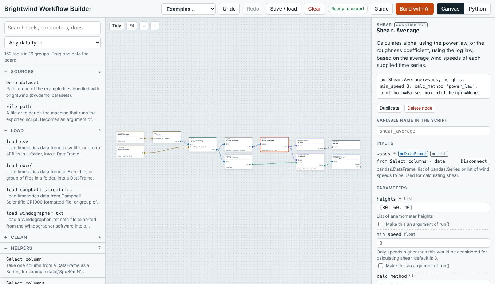
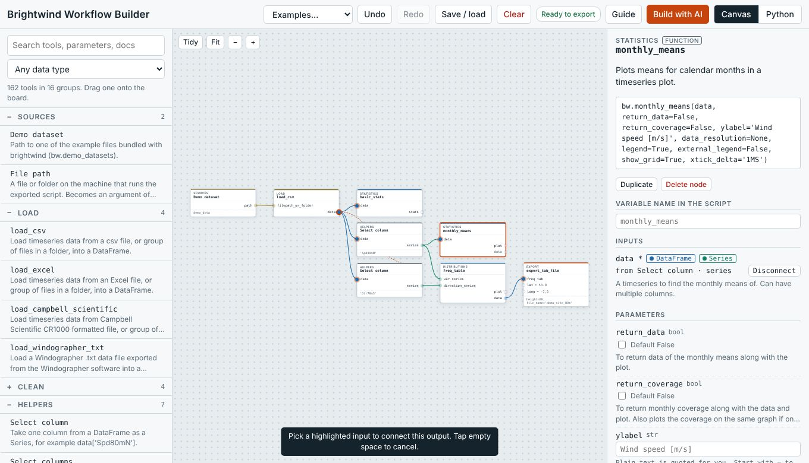
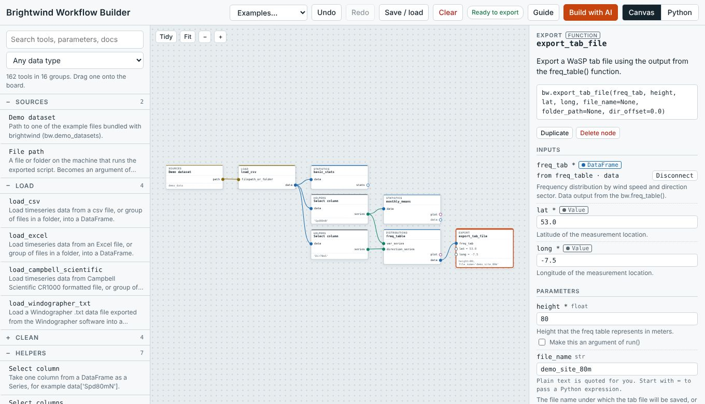
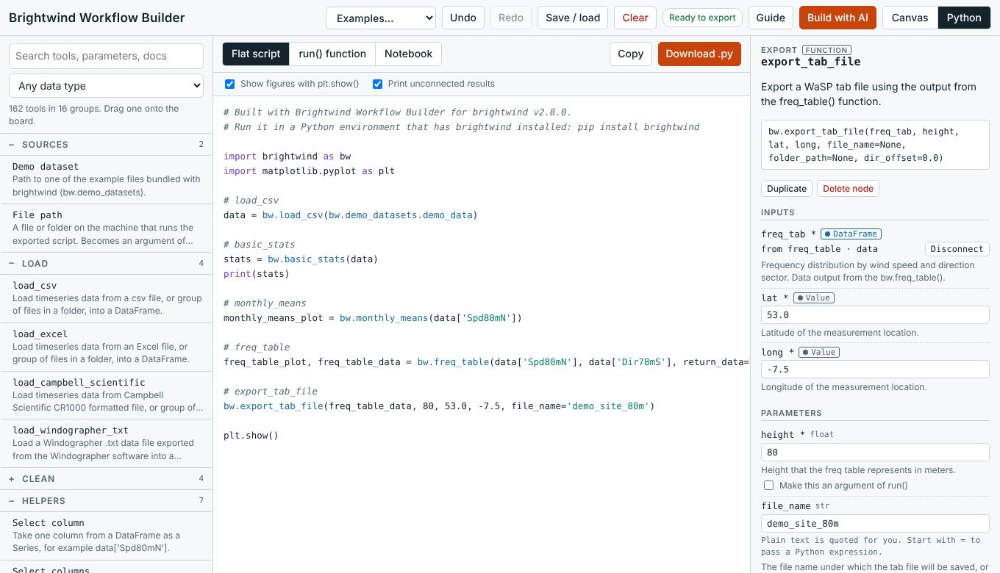
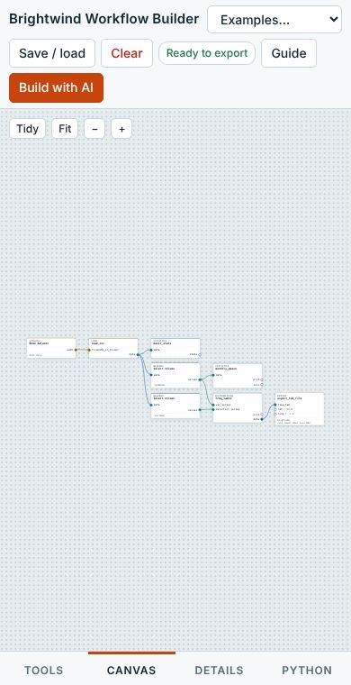
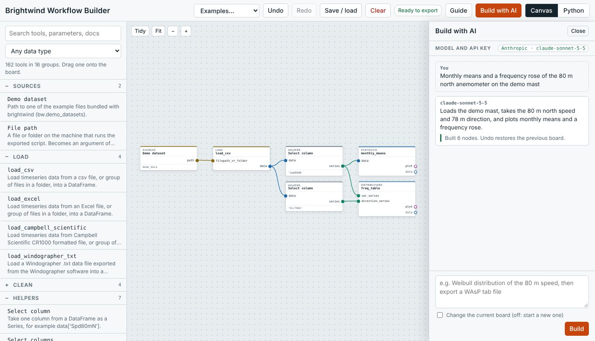

How to use
Explore brightwind, wire an analysis, take home a script
The Brightwind Workflow Builder lays out every public tool in the brightwind wind resource assessment library (v2.8.0) as a node you can drop on a board and wire to others. When the pipeline is ready, it writes the Python for you.
Nothing runs in the browser. Your data never leaves your machine: the page only writes code, and you run that code wherever brightwind is installed.
01Quick start
- Open the builder. The first visit opens an example: a site overview of the demo mast that ends in a WAsP tab file.
- Pick another example from Examples… in the top bar, or press Clear to start empty.
- Drag a tool from the list on the left onto the board. Start with
Demo datasetorFile path, thenload_csv. - Drag from an output port (right edge of a node) to an input port (left edge of another). Only matching types connect.
- Click a node to set its parameters in the panel on the right. Red badges mark inputs that still need a value.
- Switch to Python at the top right, choose a format, then Copy or Download.
- Run it:
pip install brightwind, thenpython brightwind_workflow.py.
Prefer to describe the analysis in words? Build with AI wires the board from a prompt, using your own API key.
02The screen

Shear.Average node selected.| Area | What it does |
|---|---|
| Top bar | Examples, Undo and Redo, Save / load, Clear, a status pill (Ready to export or the number of nodes to fix), this guide, Build with AI, and the Canvas / Python switch. |
| Tools (left) | The catalog: 153 brightwind tools plus 9 helpers, grouped and searchable. Click one to read its documentation; drag it to add it. |
| Board (middle) | Your pipeline. Pan by dragging empty space, zoom with the mouse wheel, a pinch, or the − + buttons. Tidy lays nodes out left to right in run order; Fit brings everything into view. |
| Details (right) | Shows the selected node's inputs, parameters, outputs and full docstring. With nothing selected, it lists what still needs fixing and explains the port colours. |
| Python | The generated code, updated live, in three formats. |
03Finding tools
Tools are grouped the way an analysis usually runs: Sources, Load, Clean, Helpers, Transform, Statistics, Distributions, Turbulence, Shear, Correlation, Atmosphere, Plot, Station, BrightHub, Export and Utilities.
- Search matches tool names, summaries, parameter names and docstrings. Several words narrow the list:
sector ratio,tab file,coverage. - Data type filter lists tools that accept or return a type. Accepts Series shows everything you can do with one column; Returns Figure shows every plot.
- Click a tool to read it without adding it: signature, each input with the types it accepts, parameters with defaults, outputs, the full docstring, and a link to the exact line in the brightwind source.
- Tags warn you about two kinds of tool. Deprecated tools still work but are going away; the
LoadBrightdatafunctions are deprecated in favour ofLoadBrightHub. Not implemented tools are listed for completeness but can't be added, because brightwind 2.8.0 raisesNotImplementedErrorfor them (Correl.SVRandMultipleLinearRegression.plot).
04Wiring a pipeline
Adding nodes
- Drag a tool from the list onto the board.
- Or click a tool, then Add to canvas. This is the way to add tools on a phone.
- Or select a node and use Outputs and next steps in the details panel. It lists every tool that accepts that output; clicking one adds it to the right, already wired.
- Duplicate in the details panel copies a node with its settings.
Connecting ports

load_csv · data (a DataFrame), the inputs that accept a DataFrame are highlighted and the rest fade.- Drag from an output on the right edge of a node to an input on the left edge of another, or the other way round.
- Or click one port, then click the other. The hint at the bottom of the board tells you what it's waiting for. Click empty space or press Esc to cancel.
- An input takes one wire. Connecting a new one replaces the old.
- An output can feed any number of inputs.
- Loops are refused, and so are mismatched types. A refused connection shows a message saying what the input accepts.
- To remove a wire, click it and press the × at its middle, press Delete, or use Disconnect in the details panel.
Order of execution
You don't set an order. The export sorts nodes so every input exists before it is used. When two steps don't depend on each other, the one further left (then higher up) on the board comes first.
05Port types
Each port is coloured by the kind of value it carries. Connections are strict: a wire is only allowed when the output's type is one the input accepts. This catches most mistakes before the script ever runs.
| Type | Meaning | Typical source |
|---|---|---|
| DataFrame | A pandas table of timeseries columns. | load_csv, apply_cleaning, average_data_by_period |
| Series | One column. | Select column, TI.calc, synthesize |
| Figure | A matplotlib plot. | every plot function, the plot output of analyse functions |
| Path | A file or folder path. | File path, Demo dataset |
| Value | A number or text. Lists and dicts share this colour. | Shear.Average.alpha, momm, List |
| Object | A brightwind object: a shear result, a correlation model, a measurement station. | Shear.TimeSeries, Correl.OrdinaryLeastSquares, MeasurementStation |
Some outputs follow their input. offset_timestamps, for example, returns a Series when given a Series and a DataFrame when given a DataFrame. Its output port changes type as you wire it.
Many brightwind functions take one column, so their input accepts only a Series. Put a Select column node between the loaded DataFrame and the function, and type the column name into it.
06Inputs and parameters

export_tab_file: one wired input, two typed values, and its parameters.Each argument of a brightwind function appears in one of two places on its node.
- Inputs are arguments that usually come from another node: data, series, objects, paths. They have a port. An unwired input also has a text box, where you can type a Python value instead, such as
53.4for a latitude. - Parameters are settings. They have no port and are set in the details panel. Anything left empty keeps brightwind's default and is left out of the code.
Typing values
| Field | What to type | Becomes |
|---|---|---|
Text (for example averaging_prd) | 1M. Quotes are added for you. | averaging_prd='1M' |
| Text, as an expression | Start with =: =my_period | averaging_prd=my_period |
| Python value | Python as written: 0.9, [80, 60, 40], None | exactly that |
| Checkbox | Tick or untick. The default is shown beside it. | True / False, only when not the default |
**kwargs | Extra keyword arguments passed through, for example skiprows=2 | appended to the call |
A * marks a required input or parameter. Until it has a value, the node shows a red badge with the number of open items, and the status pill counts it. You can still export: the code includes a TODO comment and ... where the value belongs.
Optional outputs and return flags
Many analyse functions return only a plot unless you pass return_data=True, in which case they return (plot, data). Their nodes show both outputs. Wiring the data output turns the flag on and unpacks the tuple in the code, so you don't need to manage it. TI.twelve_by_24 returns the pair in the opposite order, and the export handles that too.
Variable names and run() arguments
- Variable name in the script sets the name of a node's result, such as
lt_wspd_80m. Clashes get a numeric suffix. - Make this an argument of run(), under any parameter, lifts that value into the signature of the function export, with your value as the default.
File pathandDemo datasetnodes become arguments automatically.
07Objects and methods
Some brightwind tools are classes. The builder splits each into a constructor node and separate nodes for its methods and attributes. A method or attribute node takes the object on its first input.
Shear
Shear.TimeSeries, Shear.TimeOfDay, Shear.Average and Shear.BySector calculate shear from a DataFrame of anemometers and a list of heights. From the object:
.applyextrapolates a wind speed Series to a new height..alphaor.roughnessreads the result;.plotgives the figure;.infodescribes the inputs.Shear.scalescales a speed with an alpha or roughness you already have.
Correlation
A correlation needs three steps: create the model, run it, then use it.
Correl.OrdinaryLeastSquares → .run → .plot / .synthesize / .params / .dataThe constructor's output is an unfitted model and only fits .run. The output of .run is the fitted model, which the later steps accept. This stops you from synthesizing from a model that was never fitted. MultipleLinearRegression takes its reference speeds as a list: wire several Series into a List helper first.
Measurement station
MeasurementStation reads an IEA Task 43 WRA data model (a file path or a dict). Its attributes give the name, location, the measurements object, and tables of properties. apply_device_orientation_offset and the slope and offset adjustments can take it, or its measurements, as input.
08Helper nodes
Helpers are small pieces of plain Python that make brightwind tools fit together. They are not brightwind functions.
| Helper | Writes | Use it to |
|---|---|---|
Demo dataset | bw.demo_datasets.demo_data | try things on the files bundled with brightwind: the demo mast, four MERRA-2 nodes, cleaning files, data models |
File path | r'C:\data\mast.csv' | point at your own file or folder |
Select column | data['Spd80mN'] | take one column as a Series |
Select columns | data[['Spd80mN', 'Spd60mN']] | keep several columns, for example the anemometers for shear |
Slice by date | data.loc['2016-06-01':'2017-05-31'] | keep a period |
List | [a, b, c] | collect up to four inputs into a list |
Python expression | your expression with {a} and {b} filled in | anything else, such as {a} - {b}. Choose what it returns so its output can be wired. |
Print | print(value) | print a result that is also wired elsewhere |
Save figure | fig.savefig('rose.png', dpi=150, …) | write a plot to an image file |
09Examples
Load any of these from Examples…. They use the demo data, so the exported scripts run as they are. Loading an example replaces the board; Undo brings your work back.
- Site overview: stats, monthly means, tab file
- Loads the demo mast, prints basic statistics, plots monthly means of the 80 m speed, builds a frequency table against the 78 m vane and exports a WAsP
.tabfile. - Clean the data, then shear to hub height
- Applies the demo cleaning log, calculates average shear from the 40, 60 and 80 m anemometers, prints alpha, extrapolates the 80 m speed to 120 m and plots its monthly means.
- Long-term correlation against MERRA-2
- Correlates the 80 m speed with the MERRA-2 NE node using monthly ordinary least squares, plots the fit, synthesizes the long-term series and reports its mean of monthly means.
- Turbulence intensity by speed, sector and time of day
- TI by wind speed bin, by direction sector and as a 12×24 plot, with the by-speed table exported to CSV.
10Exporting Python

Formats
- Flat script: one statement per node, top to bottom, with a comment naming each step. Best for reading and for small edits.
- run() function: the same steps inside
def run(...), which returns every result in a dict. File paths and any parameters you promoted become arguments, so you can call it from other code:results = run(demo_data_path=r'D:\site\mast.csv'). - Notebook: a Jupyter
.ipynbwith one cell per step. Each cell ends by displaying its unconnected result.
Options
- Show figures with plt.show() adds
import matplotlib.pyplot as pltand a finalplt.show()so plot windows open when you run the script. - Print unconnected results prints every result that doesn't feed another node. Figures and paths are never printed.
Getting the file
Copy puts the code on your clipboard. Download saves the selected format as brightwind_workflow.py, brightwind_workflow_run.py or brightwind_workflow.ipynb.
Running it
pip install brightwind # once, in the environment you will use
python brightwind_workflow.pyScripts built on the demo datasets run anywhere brightwind is installed. With your own files, check that the paths exist on the machine that runs the script and that the column names match your data. The builder can't see your data, so it can't check them.
11Saving pipelines
- The board saves itself in this browser after every change and comes back when you return. It isn't shared with other browsers or devices.
- Save / load shows the whole pipeline as JSON text. Copy it to keep it, to send it to a colleague, or to move it between devices. Paste one in and press Load pasted pipeline to restore it.
- Undo and Redo cover every change in the session, including loading an example and builds by the AI assistant.
12Build with AI
Build with AI turns a description such as “correlate the 80 m speed with MERRA-2 using monthly least squares and synthesize the long-term series” into a wired pipeline on the board. It uses a model from your own account with your own API key, so the site has no AI costs and no server in between.
The assistant follows the same type rules as manual wiring. It answers with a graph, the builder checks it, and if anything doesn't fit (an unknown tool, a wrong port, a missing required value) the problems go back to the model to fix. That repeats up to three times. What lands on the board is something you can inspect, change and export like any other pipeline.


Set it up
- Press Build with AI in the top bar and open Model and API key.
- Choose a provider and paste a key.
- Keep the suggested model, type another, or press List models to choose from the models your key can use.
- Describe the analysis and press Build (or Ctrl/⌘ + Enter).
| Provider | Key | Suggested model | Notes |
|---|---|---|---|
| Anthropic (Claude) | console.anthropic.com | claude-sonnet-5-5 | Uses prompt caching, so follow-up requests within a few minutes cost much less. |
| OpenAI | platform.openai.com | gpt-6.1-sol | Uses the Responses API. |
| OpenAI-compatible | depends on the endpoint | none: type or list one | Any endpoint with /chat/completions and tool calling. The default is OpenRouter, which reaches many models with one key. Pick a model that supports tool calling. |
- Your browser sends the request straight to the provider you chose. This site has no backend and never receives your key or prompts.
- The key is kept in memory and is gone when you close the tab, unless you tick Remember the key in this browser. Then it is stored in this browser's local storage for this site. Forget keys removes it.
- Each request sends your prompt, the tool catalog and, when you're changing the board, the current pipeline (tool names, parameters and wiring). No measurement data is sent; the builder never has any.
- Use a key with a spending limit, and don't enable Remember on a shared computer.
New board or change the current one
When the board has nodes, Change the current board is ticked. The model then sees your pipeline and returns an updated version. Ask for things like “add a Weibull plot of the 80 m speed” or “switch the correlation to orthogonal least squares”. Untick it to start a new pipeline from the prompt alone. The board is replaced either way, and Undo brings back the previous one.
Writing good prompts
- Name the data. Without a file, the assistant uses the demo mast and knows its columns (
Spd80mN,Dir78mS,T2mand so on) and the MERRA-2 nodes. For your own file, give the path and column names: “load D:/site/mast01.csv, speeds WS_100m and WS_80m, vane WD_97m”. - Name the method and its settings when you have a preference: averaging period, coverage threshold, sectors, heights, output file names.
- Build in steps. Start with loading and cleaning, then ask for each analysis as a follow-up with Change the current board ticked.
- Check the result. Read the summary, look for red badges, and skim the Python before you run it. The model works from the catalog and the docstrings, not from your data.
Cost
The catalog the model needs comes to roughly 11,000 input tokens per request, plus your prompt and the current board. Each correction round sends a short follow-up. A typical build is one to two requests with a few thousand output tokens. Check your provider's pricing for the model you choose.
If something goes wrong
- “The provider refused the API key (401)”
- The key is wrong, revoked, or for a different provider than the one selected.
- “Not found (404). Check the model name”
- The model ID doesn't exist for your key. Press List models and pick one.
- “Rate limited or out of credit (429)”
- Wait a minute, or check the billing settings in your provider's console.
- “Could not reach …”
- The endpoint is down, the address is wrong, or it doesn't accept requests from web pages (CORS). Local servers have to allow this site's origin. Ollama, for example, needs
OLLAMA_ORIGINS=https://bw-explorer.coderenewables.com. - The model replied with text and built nothing
- It decided the request can't be built from brightwind's tools, or it asked a question. Reply in the prompt box; recent messages are included as context.
- Built, but with open items
- After three rounds some values were still missing. They're marked with red badges on the board and as
TODOin the code. Fill them in yourself or ask the assistant to fix them.
Build with AI only works on this site. In a copy of the page embedded elsewhere (for example inside Claude), the page can't reach AI providers.
13Keyboard and touch
| Action | Mouse and keyboard | Touch |
|---|---|---|
| Pan the board | drag empty space, or scroll with a trackpad | drag with one finger |
| Zoom | mouse wheel, Ctrl + trackpad scroll, or − + | pinch |
| Connect ports | drag between ports, or click one then the other | tap one port, then the other |
| Cancel a connection | Esc or click empty space | tap empty space |
| Delete the selected node or wire | Delete or Backspace | Delete in the bar at the bottom |
| Undo / redo | Ctrl/⌘ + Z, Ctrl/⌘ + Shift + Z or Ctrl + Y | Undo / Redo buttons (wider screens) |
| Close a dialog or the AI panel | Esc | Close |
| Build with AI | Ctrl/⌘ + Enter in the prompt | Build |
On a phone the screen splits into four tabs at the bottom: Tools, Canvas, Details and Python. Tap a tool, then Add to canvas.
14Troubleshooting
- A port won't connect
- The types don't match; the message says what the input accepts. The usual fix is a
Select columnbetween a DataFrame and a function that takes a Series. For correlations, connect from.run, not from the constructor. - The code contains
TODOand... - A required input or parameter has no value. The status pill and the details panel (with nothing selected) list every one.
KeyErrorwhen the script runs- A column name in a
Select columnnode doesn't exist in your file. Column names are case sensitive. - Plots don't appear
- Keep Show figures with plt.show() ticked for scripts. In a notebook, figures display without it. On a headless server, add a
Save figurenode instead. - BrightHub nodes fail
- They need a BrightHub account and network access when the script runs. brightwind reads the credentials from environment variables: an API key as
BRIGHTHUB_CLIENT_IDandBRIGHTHUB_CLIENT_SECRET, orBRIGHTHUB_EMAILandBRIGHTHUB_PASSWORD. Set them before running the script. plot_meas_station_on_gmapfails- It needs the optional
gmapspackage and a Google Maps API key. - My board disappeared
- Pipelines are saved in the browser you built them in. Private windows and cleared site data lose them. Use Save / load to keep a copy.
- A brightwind function is missing
- The catalog covers what brightwind 2.8.0 exposes as
bw.*. Internal helpers that are not exported at the top level are left out. Use aPython expressionnode to call anything else.
15About
The catalog is read from the brightwind v2.8.0 source without importing it: every signature, default and docstring. Port types and groups are assigned on top of that. Every signature has been checked against the installed package, and the example pipelines run end to end.
Source, catalog scripts and instructions for updating to a new brightwind release: github.com/coderenewables/brightwind-explorer. brightwind itself: github.com/brightwind-dev/brightwind (MIT licence).